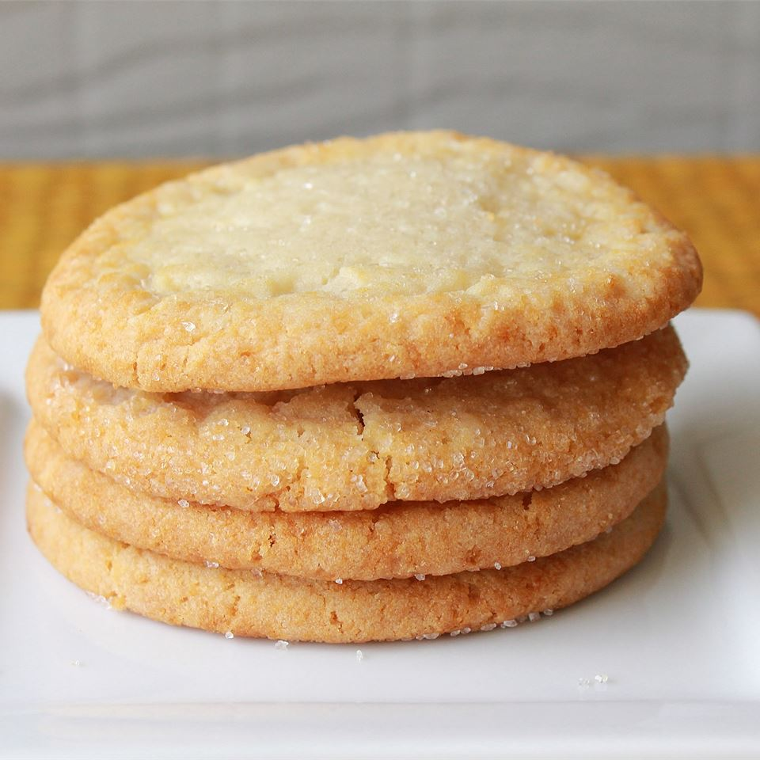

Main page
Chewy Sugar Cookies

Chewy Sugar Cookies Recipe
These sugar cookies are crisp on the outside and very chewy on the inside. Do not try to roll these cookies out, they are meant to be shaped or dropped. This recipe can easily be made into snickerdoodle cookies by rolling the dough in cinnamon-sugar before baking.
Ingredients:
- 2 ¾ cups all-purpose flour
- 1 teaspoons baking soda
- ½ teaspoon salt
- 1 ¼ cups margarine
- 2 cups white sugar
- 2 large eggs
- ½ tablespoon and ½ teaspoon vanilla extract
- ¼ cup white sugar for decoration
Steps
- In a medium bowl, stir together the flour, baking soda, and salt.
- In a large bowl, cream together the margarine and 2 cups sugar until light and fluffy. Beat in the eggs one at a time, then the vanilla. Gradually stir in the dry ingredients until just blended.
- Wrap dough with plastic wrap and chill for 30 minutes to 1 hour.
- When ready to bake, preheat the oven to 350 degrees F (175 degrees C).
- Roll the dough into walnut-sized balls and roll the balls in remaining 1/4 cup of sugar. Place cookies 2 inches apart onto ungreased cookie sheets and flatten slightly.
- Bake for 8 to 10 minutes in the preheated oven, until lightly browned at the edges. Allow cookies to cool on baking sheet for 5 minutes before removing to a wire rack to cool completely.